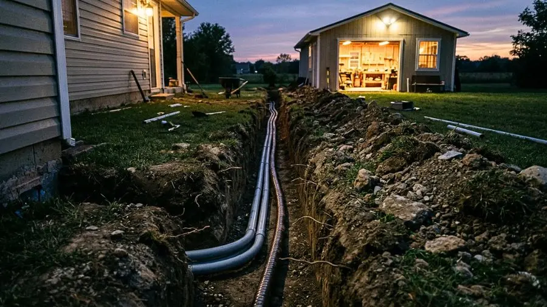

NEC (AWG) vs. IEC (mm²) Wire Sizing & Why Breakers Must Obey Ib ≤ In ≤ Iz

Golden Rule of Overcurrent Protection (Ib ≤ In ≤ Iz): Your breaker or DC fuse must trip before your cable insulation reaches its thermal limit.
One of the most expensive and dangerous mistakes in residential subpanels, industrial motor feeds, and 12V/24V/48V off-grid solar battery banks is picking a wire gauge solely from a basic amp chart—without checking percentage voltage drop and thermal derating inside conduit at the same time.
1. The Golden Protection Equation Every Electrician Must Obey: Ib ≤ In ≤ Iz
Whether you follow the American NEC (NFPA 70) in AWG or international IEC 60364 standards in metric mm², every safe circuit must satisfy three numbers simultaneously:
Ib(Design Load Current): The real continuous current (in Amps) drawn by your appliance, EV charger, water pump, or solar inverter.In(Nominal Breaker or Fuse Rating): The commercial trip rating of your thermal-magnetic breaker (e.g.,15A, 20A, 32A, 50A MCB Curve C/D) or high-interrupt DC Fuse (ANL, MEGA, Class-T).Iz(Effective Derated Cable Ampacity): The maximum continuous current the wire insulation can safely survive after applying correction factors for ambient temperature (°C / °F) and conduit grouping.
If a long cable run or a hot roof conduit drops your wire's true ampacity (Iz) to 22A while it is protected by a 25A or 30A breaker (In), a continuous 24A load will bake the insulation above 75°C/90°C for hours without ever tripping the breaker.

Long wire runs act as series resistors: every volt lost along the line turns into wasted Joule heat (P = I²R) and starves motors or inverters at the far end.
2. Quick Reference Table: Commercial Metric (IEC mm²) vs. American NEC (AWG)
A common frustration with generic calculators is that they convert American AWG sizes into awkward decimal metric numbers (like "5.26 mm²" or "8.37 mm²") that you cannot buy at any electrical supply house. In real-world fieldwork, you need standard commercial cross-sections:
3. Beyond Copper: Why 8 Conductor Metals Matter for Solar & Battery Builders
While residential wiring mostly uses electrolytic Copper (Cu) or Aluminum (Al), modern off-grid solar builders, DIY lithium battery assemblers, and industrial technicians frequently work with specialized conductors:
- Pure Nickel Strips (Ni): Essential for spot-welding
18650andLiFePO4battery packs where milliohms of resistance determine cell heating. - Nichrome Alloy (NiCr): Used to design custom heating elements, foam cutters, and load banks based on exact
I²Rwattage dissipation. - Silver (Ag), Gold (Au), Carbon Steel & Electrical Steel: Critical for high-reliability contacts, grounding paths, and magnetic core calculations.
Wire Size & Voltage Drop Calc
Stop testing wire gauges one by one! Our physical calculation engine automatically recommends the exact commercial conductor size (AWG & whole metric mm²) and protective breaker/fuse simultaneously—supporting 8 conductor metals (Copper, Aluminum, Silver, Gold, Pure Nickel, Nichrome), AC Mains, 12V/24V/48V Solar, Motor HP/Amps, 40% Conduit Fill, 40 Offline Field Guides, and a 200-question Electrician Quiz.
📱 Inside the Official Android Toolkit (100% Offline Ready):


✓ Free on Android (Google Play) • ✓ Works 100% Offline • ✓ 0% Crashes
Frequently Asked Technical Question
Why do electrical wires overheat or melt even when the circuit breaker matches the load amps?
Over long distances or inside conduits with multiple cables at elevated ambient temperatures, conductor resistance (R = ρ·L/A) causes voltage drop and Joule heating (P = I²R) while thermal derating lowers the wire's safe ampacity (Iz) below the breaker's trip rating (In). If Iz drops below In, the wire can overheat indefinitely without tripping the breaker.